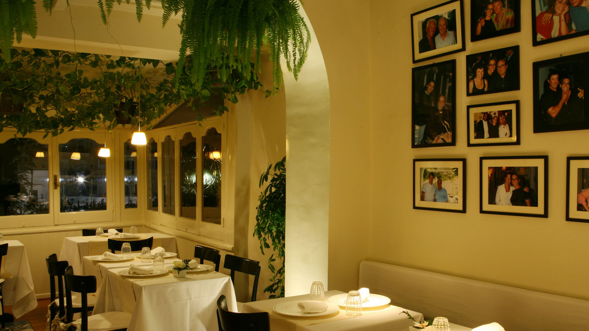
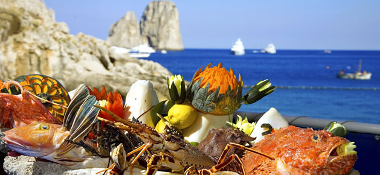
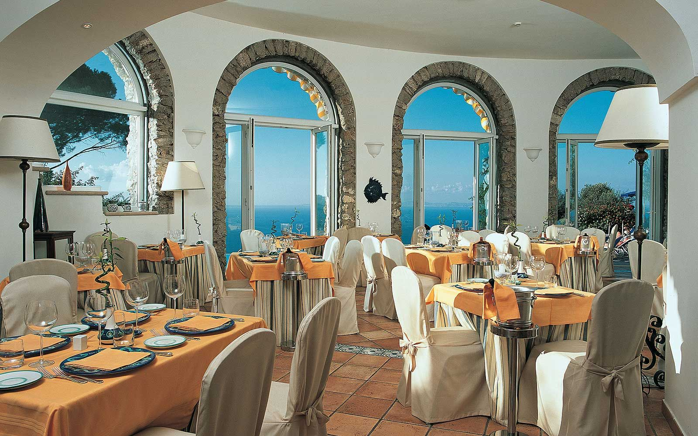
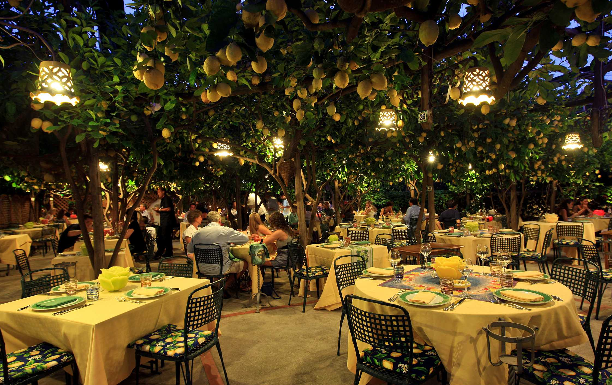

本場イタリアンを求めて…
Aurora
カプリ島内にあるもっとも古くからあるレストランのうちの一つで、美食美術館という名前で親しまれています。世界中のワインが揃っていて、種類も豊富。その数は300にものぼり、ひとつひとつの料理にあった味を楽しむことができます。。
Official Site
Torre Saracena
海に面しているレストランで、新鮮な海の幸をふんだんに利用しています。料理に使われるほとんどがお店の水槽からとったばかりのもので、その新鮮さは写真(左)からも伺えます。
Official Site
La Terrazza di Lucullo
南イタリアの伝統的な料理のお店。内装も食事も豪華で、華やかな気分を味わうことができます。ホテル内の庭で育てたハーブや野菜を使っていて健康面でも文句のないレストランです。
Official Site
da Paolino
レモンの木に囲まれているカプリ島ならではの特徴的なレストラン。木々の間から月光が差し込む夜に行くことがお勧めです。幻想的な雰囲気とともにおいしい料理が楽しめます。
Official Site
Basic Information
- Country: Italy
- Location: Tyrrhenian Sea
- Average Highest Temperature: 22℃
- Population: 12,200
- Area: 10.4㎢
- Average Lowest Temperature: 12℃